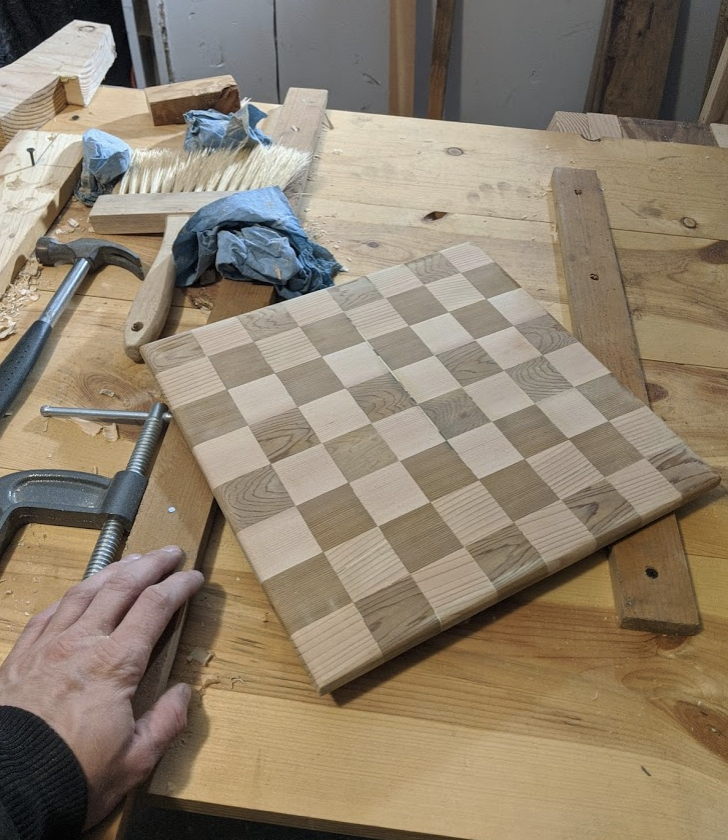

DATA SCIENTIST
Hey there! I'm Felix (fell-icks) and I use he/him pronouns. I work at Brightloom as a Senior Data Scientist.
I do things other than data science and economics. Here is what I am working on right now:
A few years ago, I helped build Simple Energy and what it became (Uplight).
I trained as an applied economist (M.Sc) at Michigan State University's AFRE program.
I served a 2-year term in the Peace Corps in Panama (El Interior).
I wrote "What can we learn from 400 years of United States executions?" in Toward Data Science.
I did the analysis for an early pandemic energy prediction for utilities, because they had never seen this before.
S. Swinton, S. Klammer and I wrote Why Biomass Residue Is Not as Plentiful as It Looks: Case Study on Economic Supply of Logging Residues which was published in Applied Economic Perspectives and Policy (2020).
The same group and I wrote How willing are different types of landowner to supply hardwood timber residues for bioenergy?, which Biomass and Bioenergy published in 2019 (122, 45-52).
In 2016, The Journal of Hunger & Environmental Nutrition published (11(3), 428-438). R. Budowle and I were a programmic allies for this cool set of work by K. Burton, E. Serrano, and H. Cox.
You can find me in a few places.